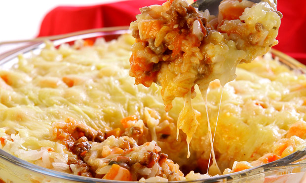

Arroz de forno
Autor: Lara Ribeiro

Tempo de Preparação: 1 hora
Rendimento: 10 porções
Informação Nutricional:
400 kcal,
30 g
Ingredientes:
-
4 xícaras(chá) de arroz cozido
-
100 g de mussarela ralada
-
100 g de presunto cortado em cubos pequenos
-
1 cenoura ralada
-
2 colheres (sopa) de salsa picada
-
2 ovos
-
1 xícara (chá) de leite
-
½ pote de requeijão
-
1 xícara (chá) de queijo parmesão ralado
-
Sal e pimenta a gosto
Modo de Preparo:
Em uma tigela, misture o arroz, a mussarela, o presunto, a cenoura e a salsa.
Coloque em um refratário untado com margarina.
No liquidificador, bata os ovos, o leite, o requeijão, o queijo ralado, o sal e a pimenta.
Despeje sobre o arroz e asse no forno preaquecido a 200 °C durante 30 minutos ou até dourar.
76 pessoas avaliaram essa receita
...